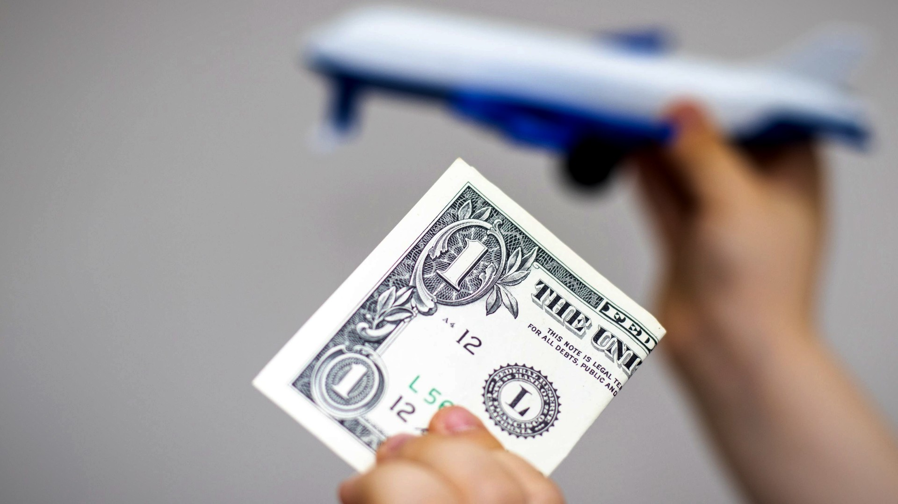

El impacto de la suba del dólar en los viajes al exterior
El Gobierno llevó el tipo de cambio oficial a 365,50 hasta las elecciones. Como consecuencia, se paralizaron las reservas de vuelos y hoteles en el extranjero.
17/08/2023 12:13
El Gobierno llevó el tipo de cambio oficial a 365,50 hasta las elecciones. Como consecuencia, se paralizaron las reservas de vuelos y hoteles en el extranjero.
Inmediatamente después de las PASO, el Gobierno llevó el el tipo de cambio oficial mayorista a $365,50. Esta devaluación del 22% del peso, tuvo consecuencias directas e inmediatas prácticamente en todos los rubros.
El turismo no fue la excepción.
Apenas conocida la medida, se frenaron las ventas de viajes al exterior. "Siempre sucede lo mismo. Con esos cimbronazos de la economía, durante el primer o segundo día se frena todo, hasta que se acomodan los sistemas y la gente digiere el shock", expresó Saúl Banchio, que está al frente de Saúl Banchio Servicios Turísticos.
En la misma línea, Gustavo Beggiato de Beggia Turismo agregó: "Todo este tema del aumento del dólar genera un parate en los viajes al exterior, sobre todo por la incertidumbre, por lo que pueda pasar. La gente se toma un tiempo para ver cómo se acomoda todo, sobre todo después de una devaluación del 22 por ciento. Desde el lunes estamos con muy pocas ventas, la gente se toma un tiempo para esperar cómo sigue el tema de la inflación del dólar".

FOTO: El sector se muestra preocupado pero optimista a la vez
¿Cuáles son las expectativas del sector?
Con la suba, el dólar oficial pasó de $306 a $ 365,5, cifra que el Gobierno aseguró que se mantendrá hasta las elecciones en octubre. Sin embargo, redujo de 25 a 5% la percepción de Bienes Personales del dólar Qatar, que es el que se utiliza para los consumos en el exterior que superan los 300 dólares por mes.
"La suba del dólar afecta porque los servicios en el exterior se cobran en dólares. Pero trazando rayas, el aumento del dólar oficial fue del 22 por ciento y el Gobierno le quitó el 20 por ciento al dólar turista. Lo que subió desde el viernes de la semana pasada a esta, por el incremento del dólar, fue un paquete al Caribe un 10 por ciento. Siempre hablando de pagar el viaje en pesos", explicó Saúl Banchio.
Desde el sector confían en que con el paso de los días, todo se irá estabilizando. Si bien no se puede ignorar que hubo una fuerte devaluación del peso y que es una situación que tarda en normalizarse, es un escenario muy común en Argentina.

El impulso o necesidad de viajar
Con el paso de las semanas, habrá pasado el efecto del cimbronazo y el turismo volverá a ocupar su lugar. Incluso, con este tipo de crisis, las compañías aéreas y los hoteles suelen poner a disposición tarifas de venta corta en promoción y ayudan a reactivar el mercado.
En este sentido, Gustavo Beggiato se mostró cauto y expresó: "Siempre somos optimistas de que se vuelva a acomodar un poco. Es un año electoral, en octubre también es incierto lo que pueda pasar. Van a ser dos meses de mucha incertidumbre y por lo tanto va a haber una merma en la actividad".
Saúl Banchio va un poco más allá y afirma que "La gente quiere viajar igual. Después de lo que vivimos en la pandemia, la gente ahorro que tiene lo destina a viajes". "Creemos y consideramos que se va a volver a viajar porque al argentino le gusta viajar. Al menos una vez al año necesitamos irnos a despejarnos y relajarnos del lio en el que vivimos todos los días", coincide Pamela Granero de Saúl Banchio servicios turísticos.